Chord Quality
Chord Quality Link to heading
Triad Chord Link to heading
Diminished Triad (end with a circle): the interval of the first and fifth is d5 (Perfect Triad) Minor Triad (m) : the interval of the first and fifth is P5: stacked with m3 and M3 (Perfect Triad) Major Triad (M): the interval of the first and fifth is P5: stacked with M3 and m3 Augmented Triad (+): the interval of the first and fifth is A5
Chords Addition Link to heading
The rule of dissonance 7th is the rule followed by the classical period
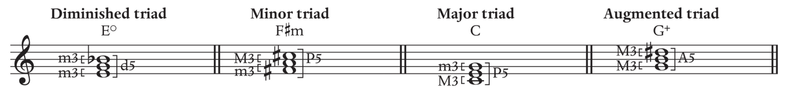
Observation Link to heading
By looking at the Triad (Stacking) (-) Diminished Triad: Minor 3rd + Minor 3rd (m) Minor Triad: Minor 3rd + Major 3rd (M) Major Triad: Major 3rd + Minor 3rd (+) Augmented Triad: Major 3rd + Major 3rd
By looking at the 5th interval (The most outside notes) (+) Augmented chord: From perfect 5th to augmented 5th (-) Diminished chord: From perfect 5th to diminished 5th (M/m) Major/minor chord: Perfect 5th stays perfect 5th
Q. To write a given triad (G#m) Write natural triad Match the root with accidental Match the proper structure with accidental (m3+M3 and confirm P5)
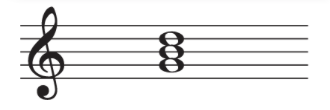
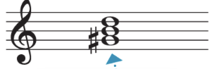
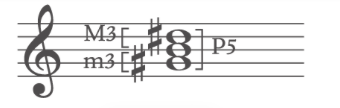
Chord Inversion Link to heading
The inversion is solely based on the bass note (the lowest note) The figure is labeled based on the distance of other note with the base note:
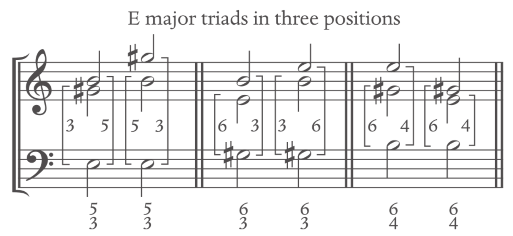
Roman numeral for any major key
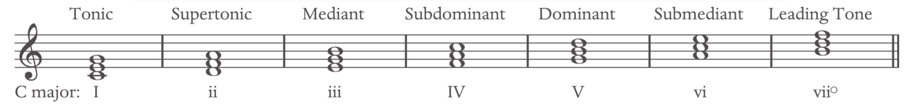
Roman numeral for any natural minor key
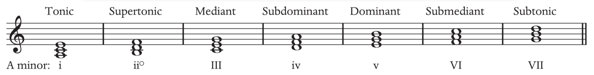
Note that the v and the VII chord are usually modified to be used with the raised 7 (harmonic minor scale), in which
- v becomes V
- VII becomes vii°
Seventh Chord Link to heading
From Stacking perspective Fully Diminished: diminished triad + minor third Half-Diminished: diminished triad + major third Minor: minor triad + major third Dominant: major triad + minor third Major: major triad + major third
From the 7th interval perspective Fully Diminished: diminished triad + d7 Half-Diminished: diminished triad + m7 Minor: minor triad + m7 Dominant: major triad + m7 Major: major triad + M7
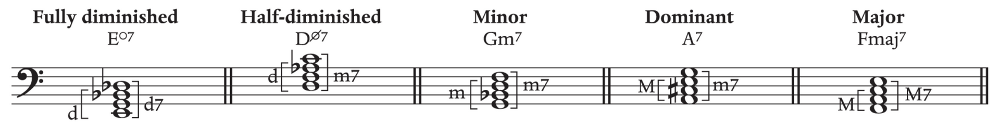
Q. To write a given seventh chord (EbMaj7) Write base seventh chord Match the root Add proper accidental to the triad and the seventh
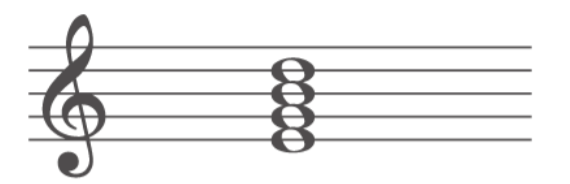
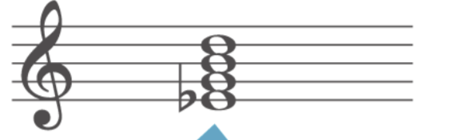
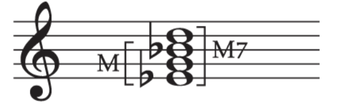
Seventh Chord Inversion Link to heading
Same as Triad, but with its accordance number figure
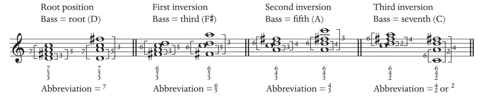
Note: the seventh chord are found more often built on 2, 4, 5, 7 than 1, 3, 6
The basic form of the chord
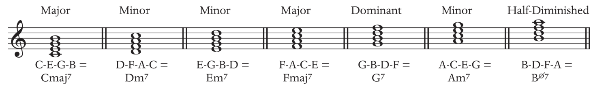
Triad and Seventh chord comparison Link to heading
Natural white key Seventh Chord Major Seventh Chord: I7 ii7 iii7 IV7 V7 vi7 viiØ7 Natural Minor Seventh Chord: i7 iiØ7 III7 iv7 v7 VI7 VII7 Harmonic Minor Seventh Chord: i7 iiØ7 III7 iv7 V7 VI7 vii°7
Natural white key Triad Chord Major Triad Chord: I ii iii IV V vi vii° Natural Minor Triad Chord: i ii° III iv v VI VII Harmonic Minor Triad Chord: i ii° III iv V VI vii°